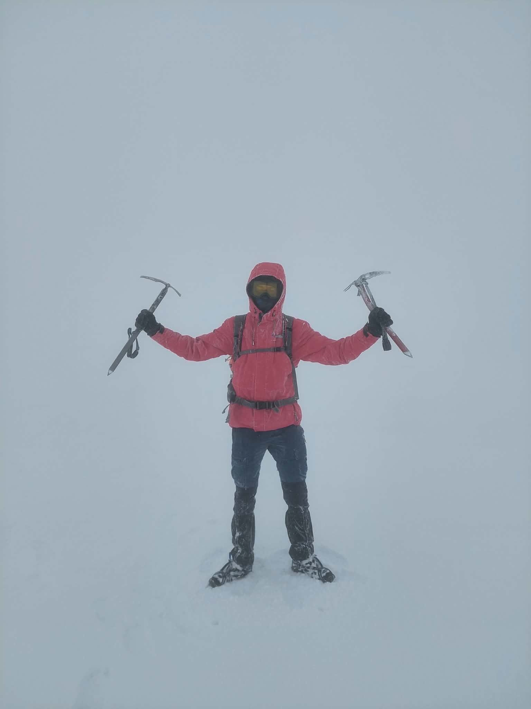

A passionate enthusiast of programming, GIS projects and long-distance travel. This site collects my projects and documents the places I've visited.
World map project under construction 🚧
Project in the future.